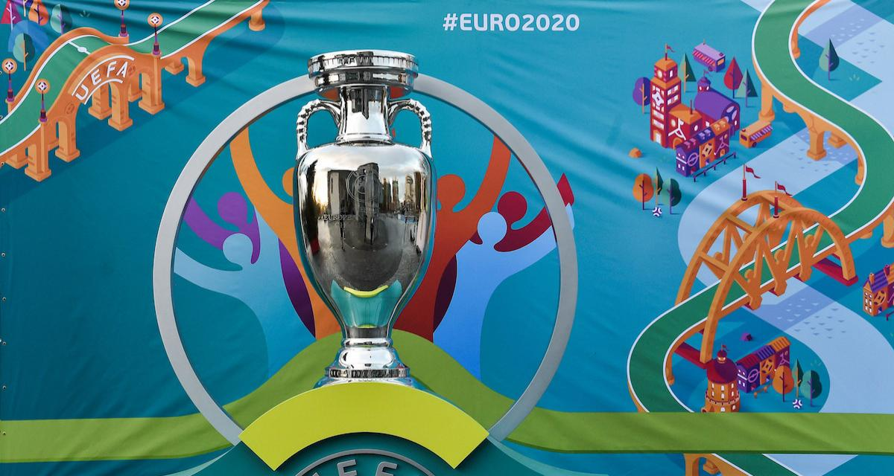
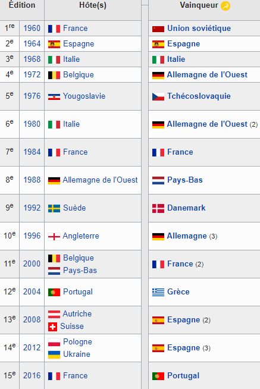

كأس اوروبا

بطولة كرة القدم الأوروبية هي مسابقة أوروبية بين أفضل الاختيارات الوطنية لكرة القدم للرجال ، ينظمها اتحاد الاتحادات الأوروبية لكرة القدم (UEFA). تم تخيله في عام 1927 من قبل هنري ديلوناي ، تم إنشاؤه في عام 1960 تحت اسم كأس الأمم الأوروبية ويقام كل أربع سنوات ، بالتناوب حتى مع كأس العالم.
تم تغيير اسمها إلى بطولة الأمم الأوروبية في عام 1968 ، بمناسبة تقديم مرحلة أولية للمجموعة
، واليورو منذ عام 1996. توجد مسابقات مكافئة في الاتحادات القارية الخمس الأخرى. من الناحية الرياضية ، يعتبر اليورو أهم منافسة بين الدول ، بعد كأس العالم ، بسبب عدد ومستوى الفرق الأوروبية.
فازت البرتغال بالطبعة الخامسة عشرة
(من 10 يونيو إلى 10 يوليو 2016 في فرنسا). تم تأجيل ال 16 ، يورو 2020 ، إلى عام 2021 بسبب وباء Covid-19.
تاريخ
في عام 1927 ، طرح الأمين العام للاتحاد الفرنسي لكرة القدم ، هنري ديلوناي ، فكرة تنظيم مسابقة قارية على الأراضي الأوروبية ، لكن الفكرة لم تنجح في غياب منظمة أوروبية. في عام 1954 ، ولد الاتحاد الأوروبي لكرة القدم وقرر دراسة هذا المشروع. يعلن أن النسخة الأولى ستقام في عام 19602. تبدأ كأس الأمم الأوروبية الأولى في شكل كلاسيكي لكأس الإقصاء المباشر حيث تتنافس الفرق في مباريات ذهاب وإياب ، بدءاً بجولة أولية (منها أعفى عددًا معينًا من الفرق اعتمادًا على إجمالي عدد المشاركات) ، تليها الجولة 16 وربع النهائي. قرر نصف النهائي الأربعة من هذه المرحلة الأولى على البلد المضيف أن يلعب البطولة النهائية بما في ذلك نصف النهائي (في مباراة) ، مباراة المركز الثالث والنهائي. في عام 1960 ، شاركت 17 دولة فقط (لا يوجد بريطاني) في الطبعة الأولى التي انتهت في فرنسا. المباراة النهائية ، التي لعبت في باريس ، فازت 2-1 من قبل الاتحاد السوفياتي بقيادة ليف ياشين ضد يوغوسلافيا بعد وقت إضافي. وهكذا أصبح الاتحاد السوفييتي أول دولة تدخل اسمها في قائمة الجوائز 3. إنها كأسه القاري الوحيد 4. نلاحظ أن ربع النهائي بين إسبانيا والاتحاد السوفييتي كان مثيرا للجدل. لم تحدث أي من المباراتين المقررتين ، ورفض الإسبان ، من خلال فرانكو ، لقاء الفريق السوفياتي. وبالتالي فإن الاتحاد السوفييتي مؤهل بالتنازل عن المربع الأخير. في وقت الإصدار الثاني ، في عام 19645 ، انزعجت المنافسة مرة أخرى بسبب الرهانات السياسية ، والواقع أن اليونان ترفض مواجهة ألبانيا بسبب الصراع بين البلدين. تجري المرحلة النهائية في إسبانيا حيث يتغلب المنتخب الأيبري على نظيره السوفييتي ، حامل اللقب ، 2-1 في مدريد أمام 125000 متفرج.
يُقام يورو 2016 في فرنسا بمشاركة 24 دولة للمرحلة النهائية. في مقابلة مع صحيفة فرانس فوتبول يوم الثلاثاء 30 نوفمبر 2012 ، حكم جاك لامبرت رئيس اللجنة المنظمة على شكل المسابقة ، وخلال الجولة الأولى كانت هناك ست مجموعات من أربعة فرق تأهل الفريقان الأولان لجولة 16 ، فضلا عن أفضل ثلاثة أرباع 17. استفادت البرتغال من هذا الشكل لتكون الأولى في مسابقة للفوز بالتتويج ، ضد الدولة المنظمة.
